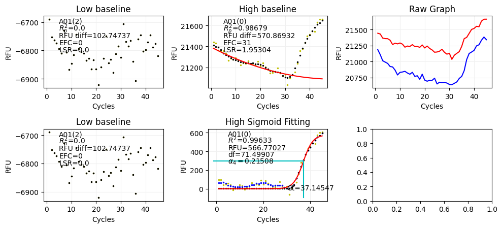
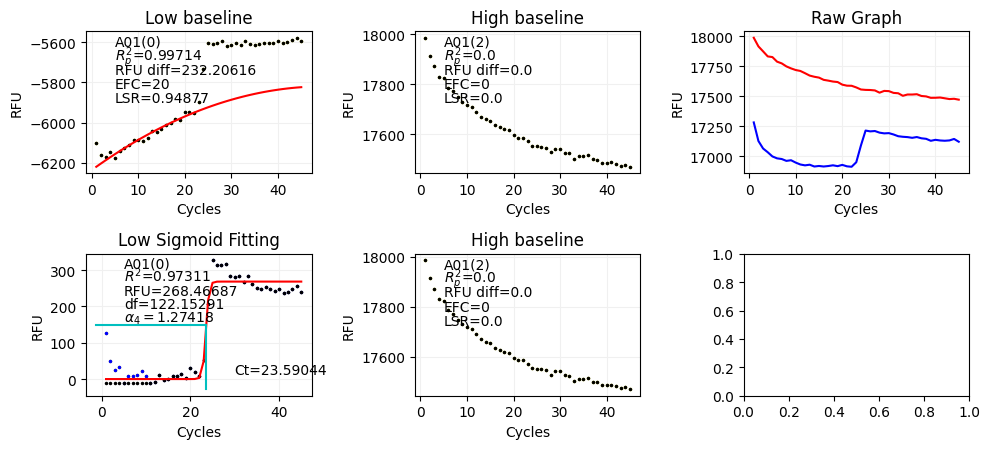

# Install Requirements
# !sudo apt-get install libc++-dev libc++abi-dev
# !pip install --index-url https://pkgs.dev.azure.com/Seegene-SW/PyDSP/_packaging/PyDSP/pypi/simple/ --upgrade "pydsp>=2.1.0a2" "pydsptools>=0.3.2"VOC 데이터 처리 예제
준비하기
Conda 환경 생성
conda create -n voc python=3.11PyDSPTools 설치
Azure DevOps PyDSP 프로젝트에 접근 권한이 있어야 합니다. Azure DevOps 프로젝트에 접근 권한이 없는 경우, 김형규 과장에게 요청 부탁드립니다.
Azure DevOps Personal Access Token 생성
- Azure DevOps Personal Access Token에 접속합니다.
- New Token 버튼을 클릭합니다.
- Name에 토큰 이름을 입력합니다.
- Organization에 Seegene-SW를 선택합니다.
- Scopes에 Custom defined을 선택합니다.
- Custom defined에 Packaging에 Read를 선택합니다.
- Create 버튼을 클릭합니다.
다음과 같이 ~/.netrc 파일 생성
machine pkgs.dev.azure.com
login <Azure DevOps 사용자 이메일>
password <Azure DevOps Personal Access Token>설치하기
pip install --upgrade --index-url https://pkgs.dev.azure.com/Seegene-SW/PyDSP/_packaging/PyDSP/pypi/simple/ pydsp
pip install --upgrade --index-url https://pkgs.dev.azure.com/Seegene-SW/PyDSP/_packaging/PyDSP/pypi/simple/ pydsptools분석하기
import pathlib
import pandas as pdSeegene Export 데이터를 다음과 같이 Parquet 파일로 변환
pathlib.Path(f"processed/example1").mkdir(parents=True, exist_ok=True)
pathlib.Path(f"processed/example2").mkdir(parents=True, exist_ok=True)!python -m pydsptools.biorad.parse -t cfx-xl -f parquet -o "processed/example1" "data/20. 체코_RP1/"2024-01-05 19:24:27,342 - 357833 - INFO - Parse data/20. 체코_RP1/
2024-01-05 19:24:27,652 - 357833 - INFO - Convert to Arrow: 1. RP1 _2015-02-17 15-20-27_BR100181
2024-01-05 19:24:27,672 - 357833 - INFO - Write to processed/example1/1. RP1 _2015-02-17 15-20-27_BR100181.parquet!python -m pydsptools.biorad.parse -t cfx-xl -f parquet -o "processed/example2" "data/11. SSI191220-001_스페인_RP1, RP2, RP3"2024-01-05 19:24:28,408 - 357880 - INFO - Parse data/11. SSI191220-001_스페인_RP1, RP2, RP3/
2024-01-05 19:24:28,740 - 357880 - INFO - Convert to Arrow: 1. Para ALFONSO_Fallo software FAm VRS A - RP123 STARLET_2019-10-2811-20-16_B
2024-01-05 19:24:28,770 - 357880 - INFO - Write to processed/example2/1. Para ALFONSO_Fallo software FAm VRS A - RP123 STARLET_2019-10-2811-20-16_B.parquetProcessed Parquet 파일에 pcr_system, consumable, temperature, experiment_name, plate_name 컬럼 추가
TESTNAME = "example1"
PCR_SYSTEM = "CFX96"
CONSUMABLE = "8-strip"
EXPERIMENT_NAME = "20. 체코_RP1"
PLATE_NAME = "plate_data_001"
PROTOCOL = {4: "Low", 5: "High"}
paths = pathlib.Path(f"./processed/{TESTNAME}").glob("*.parquet")
for path in paths:
name = path.name[:-8]
df = pd.read_parquet(path)
df["pcr_system"] = PCR_SYSTEM
df["consumable"] = CONSUMABLE
df["temperature"] = df.apply(lambda x: PROTOCOL[x["step"]], axis=1)
df["experiment_name"] = EXPERIMENT_NAME
df["plate_name"] = PLATE_NAME
outdir = pathlib.Path(f"./computed/{TESTNAME}/pcr_results")
if outdir.exists() is False:
outdir.mkdir(parents=True)
df.to_parquet(outdir / f"{name}.parquet")TESTNAME = "example2"
PCR_SYSTEM = "CFX96"
CONSUMABLE = "8-strip"
EXPERIMENT_NAME = "11. SSI191220-001_스페인_RP1, RP2, RP3"
PLATE_NAME = "plate_data_001"
PROTOCOL = {4: "Low", 5: "High"}
paths = pathlib.Path(f"./processed/{TESTNAME}").glob("*.parquet")
for path in paths:
name = path.name[:-8]
df = pd.read_parquet(path)
df["pcr_system"] = PCR_SYSTEM
df["consumable"] = CONSUMABLE
df["temperature"] = df.apply(lambda x: PROTOCOL[x["step"]], axis=1)
df["experiment_name"] = EXPERIMENT_NAME
df["plate_name"] = PLATE_NAME
outdir = pathlib.Path(f"./computed/{TESTNAME}/pcr_results")
if outdir.exists() is False:
outdir.mkdir(parents=True)
df.to_parquet(outdir / f"{name}.parquet")DSP 실행
docker run -it --rm -v $(pwd):/code seegene/pydsp:2.1.0-alpha.1 python -m pydsp.run.worker multiple \
-i /code/computed/example1/pcr_results \
-c /code/config/yaml/PRJDS001/RP1/dsp1_orig.yml \
-o /code/computed/example1/config__dsp1_origpathlib.Path(f"computed/example1/config__dsp1_orig/dsp").mkdir(parents=True, exist_ok=True)
pathlib.Path(f"computed/example2/config__dsp1_orig/dsp").mkdir(parents=True, exist_ok=True)!python -m pydsp.run.worker multiple \
-i computed/example1/pcr_results \
-c config/yaml/PRJDS001/RP1/dsp1_orig.yml \
-o computed/example1/config__dsp1_orig2024-01-05 19:24:29,596 - 357937 - INFO - Check entry /home/kmkim/pda/dsp-research-voc/computed/example1/pcr_results/1. RP1 _2015-02-17 15-20-27_BR100181.parquet
2024-01-05 19:24:29,638 - 357937 - INFO - Start 1 tasks
2024-01-05 19:24:30,020 - 357981 - INFO - Start file:///home/kmkim/pda/dsp-research-voc/computed/example1/pcr_results/1. RP1 _2015-02-17 15-20-27_BR100181.parquet
2024-01-05 19:24:30,392 - 357981 - INFO - Save computed/example1/config__dsp1_orig/dsp/1. RP1 _2015-02-17 15-20-27_BR100181.dsp.parquet
2024-01-05 19:24:30,406 - 357937 - INFO - All tasks done
2024-01-05 19:24:30,407 - 357981 - INFO - process shutting down
2024-01-05 19:24:30,414 - 357937 - INFO - process shutting down!docker run -it --rm -v $(pwd):/code seegene/pydsp:2.1.0-alpha.1 python -m pydsp.run.worker multiple \
-i /code/computed/example2/pcr_results \
-c /code/config/yaml/PRJDS001/RP1/dsp1_orig.yml \
-o /code/computed/example2/config__dsp1_orig2024-01-05 10:24:31,561 - 1 - INFO - Check entry /code/computed/example2/pcr_results/1. Para ALFONSO_Fallo software FAm VRS A - RP123 STARLET_2019-10-2811-20-16_B.parquet
2024-01-05 10:24:31,637 - 1 - INFO - Start 1 tasks
2024-01-05 10:24:32,139 - 37 - INFO - Start file:///code/computed/example2/pcr_results/1. Para ALFONSO_Fallo software FAm VRS A - RP123 STARLET_2019-10-2811-20-16_B.parquet
2024-01-05 10:24:32,858 - 37 - INFO - Save /code/computed/example2/config__dsp1_orig/dsp/1. Para ALFONSO_Fallo software FAm VRS A - RP123 STARLET_2019-10-2811-20-16_B.dsp.parquet
2024-01-05 10:24:32,880 - 1 - INFO - All tasks done
2024-01-05 10:24:32,881 - 37 - INFO - process shutting down
2024-01-05 10:24:32,891 - 1 - INFO - process shutting down분석
import pydsptools.plot as dsppltdf = pd.read_parquet('computed/example1/config__dsp1_orig/dsp/1. RP1 _2015-02-17 15-20-27_BR100181.dsp.parquet')df.head()| name | steps | pcr_system | consumable | welltype | well | channel | temperature | original_rfu | has_melt | ... | postproc_ct | has_ctalk | ctalk_resultwell | ctalk_dataprocnum | ctalk_ct | final_resultwell | final_dataprocnum | final_ct | experiment_name | plate_name | |
|---|---|---|---|---|---|---|---|---|---|---|---|---|---|---|---|---|---|---|---|---|---|
| 0 | 1. RP1 _2015-02-17 15-20-27_BR100181 | [4, 5] | None | 8-strip | Sample | A01 | FAM | Low | [21184.8276041249, 21106.1756240489, 21011.761... | 0 | ... | -1.000000 | 0 | 0 | 0 | 0 | 1.0 | 2.0 | -1.000000 | 20. 체코_RP1 | plate_data_001 |
| 1 | 1. RP1 _2015-02-17 15-20-27_BR100181 | [4, 5] | None | 8-strip | Sample | A01 | FAM | High | [21441.315877728, 21429.1163752568, 21364.8813... | 0 | ... | 37.145472 | 0 | 0 | 0 | 0 | 0.0 | 0.0 | 37.145472 | 20. 체코_RP1 | plate_data_001 |
| 2 | 1. RP1 _2015-02-17 15-20-27_BR100181 | [4, 5] | None | 8-strip | Sample | A01 | HEX | Low | [4844.45371876817, 4837.80217186882, 4830.3241... | 0 | ... | -1.000000 | 0 | 0 | 0 | 0 | 1.0 | 1.0 | -1.000000 | 20. 체코_RP1 | plate_data_001 |
| 3 | 1. RP1 _2015-02-17 15-20-27_BR100181 | [4, 5] | None | 8-strip | Sample | A01 | HEX | High | [5254.91360159913, 5245.42056518688, 5238.2580... | 0 | ... | -1.000000 | 0 | 0 | 0 | 0 | 1.0 | 1.0 | -1.000000 | 20. 체코_RP1 | plate_data_001 |
| 4 | 1. RP1 _2015-02-17 15-20-27_BR100181 | [4, 5] | None | 8-strip | Sample | A01 | Cal Red 610 | Low | [6813.1806841619, 6790.42379588041, 6771.24123... | 0 | ... | -1.000000 | 0 | 0 | 0 | 0 | 1.0 | 1.0 | -1.000000 | 20. 체코_RP1 | plate_data_001 |
5 rows × 52 columns
df.columnsIndex(['name', 'steps', 'pcr_system', 'consumable', 'welltype', 'well',
'channel', 'temperature', 'original_rfu', 'has_melt', 'melt',
'melt_idx', 'setval_ispc', 'setval_used_temp', 'setval_thrd',
'preproc_resultwell', 'preproc_dataprocnum', 'preproc_rfu',
'preproc_endrfu', 'analysis_resultwell', 'analysis_dataprocnum',
'analysis_lsr_val', 'analysis_rd_diff', 'analysis_ivd_cdd_output',
'analysis_cff', 'analysis_scd_fit', 'analysis_r_p2', 'analysis_efc',
'analysis_absd_orig', 'analysis_absd', 'analysis_f', 'analysis_f_new',
'analysis_sht', 'analysis_sht2', 'analysis_param', 'analysis_param_new',
'analysis_r2', 'analysis_endrfu', 'analysis_df', 'analysis_ct',
'postproc_resultwell', 'postproc_dataprocnum', 'postproc_ct',
'has_ctalk', 'ctalk_resultwell', 'ctalk_dataprocnum', 'ctalk_ct',
'final_resultwell', 'final_dataprocnum', 'final_ct', 'experiment_name',
'plate_name'],
dtype='object')df[df['setval_ispc']==1]| name | steps | pcr_system | consumable | welltype | well | channel | temperature | original_rfu | has_melt | ... | postproc_ct | has_ctalk | ctalk_resultwell | ctalk_dataprocnum | ctalk_ct | final_resultwell | final_dataprocnum | final_ct | experiment_name | plate_name | |
|---|---|---|---|---|---|---|---|---|---|---|---|---|---|---|---|---|---|---|---|---|---|
| 88 | 1. RP1 _2015-02-17 15-20-27_BR100181 | [4, 5] | None | 8-strip | PC | D03 | FAM | Low | [18808.1245409867, 18683.9979336548, 18544.325... | 0 | ... | 20.262437 | 0 | 0 | 0 | 0 | 0.0 | -3.0 | 20.262437 | 20. 체코_RP1 | plate_data_001 |
| 89 | 1. RP1 _2015-02-17 15-20-27_BR100181 | [4, 5] | None | 8-strip | PC | D03 | FAM | High | [18587.3610077071, 18520.2563558091, 18451.970... | 0 | ... | 16.346155 | 0 | 0 | 0 | 0 | -2.0 | -2.0 | 16.346155 | 20. 체코_RP1 | plate_data_001 |
| 90 | 1. RP1 _2015-02-17 15-20-27_BR100181 | [4, 5] | None | 8-strip | PC | D03 | HEX | Low | [4524.2746308553, 4508.17017079507, 4487.51104... | 0 | ... | 22.772974 | 0 | 0 | 0 | 0 | 0.0 | 0.0 | 22.772974 | 20. 체코_RP1 | plate_data_001 |
| 91 | 1. RP1 _2015-02-17 15-20-27_BR100181 | [4, 5] | None | 8-strip | PC | D03 | HEX | High | [4871.65657895929, 4854.66747020544, 4847.2537... | 0 | ... | 21.494555 | 0 | 0 | 0 | 0 | -2.0 | -2.0 | 21.494555 | 20. 체코_RP1 | plate_data_001 |
| 92 | 1. RP1 _2015-02-17 15-20-27_BR100181 | [4, 5] | None | 8-strip | PC | D03 | Cal Red 610 | Low | [6333.01781477878, 6290.4102828995, 6252.23282... | 0 | ... | 21.303390 | 0 | 0 | 0 | 0 | 0.0 | -3.0 | 21.303390 | 20. 체코_RP1 | plate_data_001 |
| 93 | 1. RP1 _2015-02-17 15-20-27_BR100181 | [4, 5] | None | 8-strip | PC | D03 | Cal Red 610 | High | [6964.8978994012, 6930.26388533646, 6898.99672... | 0 | ... | 20.414985 | 0 | 0 | 0 | 0 | 0.0 | -3.0 | 20.414985 | 20. 체코_RP1 | plate_data_001 |
| 94 | 1. RP1 _2015-02-17 15-20-27_BR100181 | [4, 5] | None | 8-strip | PC | D03 | Quasar 670 | Low | [5822.87197490964, 5795.40067264352, 5773.9990... | 0 | ... | 19.965064 | 0 | 0 | 0 | 0 | 0.0 | 0.0 | 19.965064 | 20. 체코_RP1 | plate_data_001 |
| 95 | 1. RP1 _2015-02-17 15-20-27_BR100181 | [4, 5] | None | 8-strip | PC | D03 | Quasar 670 | High | [5200.45196654786, 5187.01395067171, 5174.0312... | 0 | ... | 21.292709 | 0 | 0 | 0 | 0 | -2.0 | -2.0 | 21.292709 | 20. 체코_RP1 | plate_data_001 |
8 rows × 52 columns
p = dspplt.DspResultLegacyPlot(df)p.plot(well="A01", channel="FAM")
df = pd.read_parquet('computed/example2/config__dsp1_orig/dsp/1. Para ALFONSO_Fallo software FAm VRS A - RP123 STARLET_2019-10-2811-20-16_B.dsp.parquet')df.head()| name | steps | pcr_system | consumable | welltype | well | channel | temperature | original_rfu | has_melt | ... | postproc_ct | has_ctalk | ctalk_resultwell | ctalk_dataprocnum | ctalk_ct | final_resultwell | final_dataprocnum | final_ct | experiment_name | plate_name | |
|---|---|---|---|---|---|---|---|---|---|---|---|---|---|---|---|---|---|---|---|---|---|
| 0 | 1. Para ALFONSO_Fallo software FAm VRS A - RP1... | [4, 5] | None | 8-strip | Sample | A01 | FAM | Low | [17281.0731448633, 17126.0061711674, 17063.673... | 0 | ... | 23.590441 | 0 | 0 | 0 | 0 | 0.0 | 0.0 | 23.590441 | 11. SSI191220-001_스페인_RP1, RP2, RP3 | plate_data_001 |
| 1 | 1. Para ALFONSO_Fallo software FAm VRS A - RP1... | [4, 5] | None | 8-strip | Sample | A01 | FAM | High | [17986.1333988325, 17914.3453069006, 17872.985... | 0 | ... | -1.000000 | 0 | 0 | 0 | 0 | 1.0 | 2.0 | -1.000000 | 11. SSI191220-001_스페인_RP1, RP2, RP3 | plate_data_001 |
| 2 | 1. Para ALFONSO_Fallo software FAm VRS A - RP1... | [4, 5] | None | 8-strip | Sample | A01 | HEX | Low | [5172.05750233063, 5142.73324864169, 5127.9351... | 0 | ... | -1.000000 | 0 | 0 | 0 | 0 | 1.0 | 1.0 | -1.000000 | 11. SSI191220-001_스페인_RP1, RP2, RP3 | plate_data_001 |
| 3 | 1. Para ALFONSO_Fallo software FAm VRS A - RP1... | [4, 5] | None | 8-strip | Sample | A01 | HEX | High | [5748.51204992537, 5737.52600219799, 5714.3737... | 0 | ... | -1.000000 | 0 | 0 | 0 | 0 | 1.0 | 1.0 | -1.000000 | 11. SSI191220-001_스페인_RP1, RP2, RP3 | plate_data_001 |
| 4 | 1. Para ALFONSO_Fallo software FAm VRS A - RP1... | [4, 5] | None | 8-strip | Sample | A01 | Cal Red 610 | Low | [8420.8513238985, 8349.81479308575, 8324.19137... | 0 | ... | -1.000000 | 0 | 0 | 0 | 0 | 4.0 | 8.0 | -1.000000 | 11. SSI191220-001_스페인_RP1, RP2, RP3 | plate_data_001 |
5 rows × 52 columns
p = dspplt.DspResultLegacyPlot(df)p.plot(well="A01", channel="FAM")